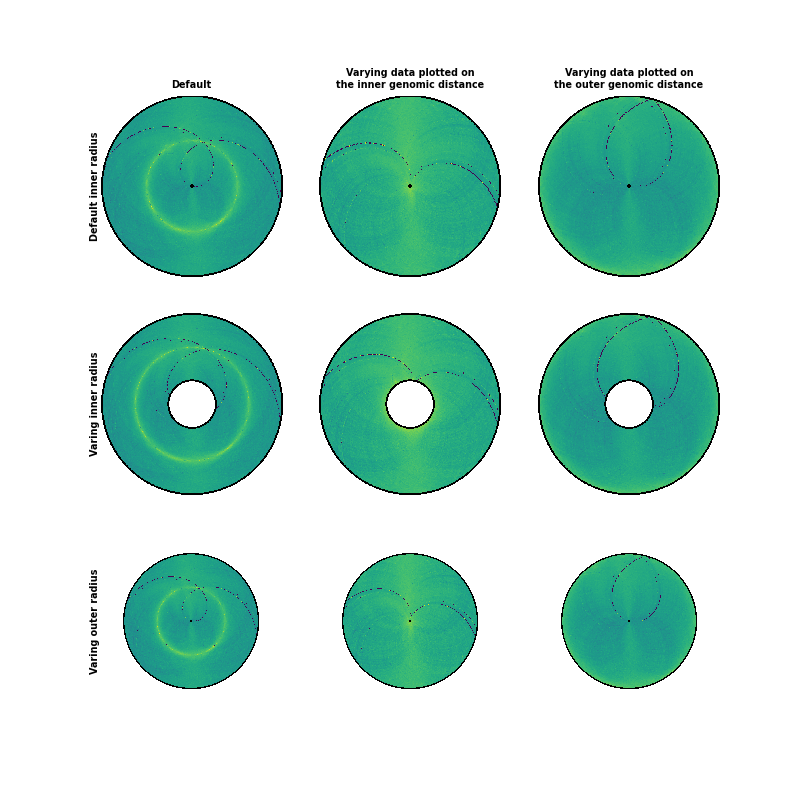

Note
Click here to download the full example code
There are several interesting options to explore for plotting heatmaps with circhic. First, one can adjust the data plotted by setting the maximum inner and outer genomic distance of the contact count being plotted. The inner distance corresponds to the “lower triangular” matrix of the contact count maps, an the outter distance to the upper triangular matrix. The data is thus symmetric to the midpoint, ie the “diagonal” of the contact count matrix.
The second set of parameters that can be adjusted is the inner relates to the size of the disk: the inner and outer radius of the disk relative to the maximum outer radius possible (1). The outer radius will only affect how much of the total available space is used, while the inner radius will effectively add white space to the disk.
Out:
/home/travis/build/TrEE-TIMC/circhic/circhic/utils.py:80: RuntimeWarning: invalid value encountered in true_divide
Theta_cos[iR] = np.arccos(V[iR]/R[iR])
/home/travis/build/TrEE-TIMC/circhic/circhic/utils.py:81: RuntimeWarning: invalid value encountered in true_divide
Theta_sin[iR] = np.arcsin(np.flip(np.transpose(V)[iR]/R[iR]))
/home/travis/build/TrEE-TIMC/circhic/circhic/utils.py:88: RuntimeWarning: invalid value encountered in greater_equal
iT = (Theta_sin >= 0) & (Theta_cos > np.pi/2)
/home/travis/build/TrEE-TIMC/circhic/circhic/utils.py:88: RuntimeWarning: invalid value encountered in greater
iT = (Theta_sin >= 0) & (Theta_cos > np.pi/2)
/home/travis/build/TrEE-TIMC/circhic/circhic/utils.py:91: RuntimeWarning: invalid value encountered in greater_equal
iT = (Theta_sin >= 0) & (Theta_cos <= np.pi/2)
/home/travis/build/TrEE-TIMC/circhic/circhic/utils.py:91: RuntimeWarning: invalid value encountered in less_equal
iT = (Theta_sin >= 0) & (Theta_cos <= np.pi/2)
(<matplotlib.image.AxesImage object at 0x7ff0e91e5cf8>, <matplotlib.axes._axes.Axes object at 0x7ff0e9ac75c0>)
import matplotlib.pyplot as plt
from iced.normalization import ICE_normalization
from circhic import datasets
from circhic._base import CircHiCFigure
# Load the data, compute the cumulative raw counts.
counts, lengths = datasets.load_ccrescentus()
cumul_raw_counts = counts.sum(axis=0)
# Normale the data using ICE, and keep the biases
counts, bias = ICE_normalization(counts, output_bias=True)
# Now, create a figure with two rows and two columns
fig, axes = plt.subplots(nrows=3, ncols=3, figsize=(8, 8))
circhicfig = CircHiCFigure(lengths, figure=fig)
# A basic Circular HiC plot.
circhicfig.plot_hic(counts, ax=axes[0, 0])
axes[0, 0].set_title("Default", fontsize="x-small", fontweight="bold")
axes[0, 0].set_ylabel("Default inner radius", fontsize="x-small",
fontweight="bold", labelpad=0, zorder=10)
# Only plotting the "upper-diagonal" contact count matrix
circhicfig.plot_hic(counts, ax=axes[0, 1], inner_gdis=0)
axes[0, 1].set_title("Varying data plotted on\nthe inner genomic distance",
fontsize="x-small", fontweight="bold")
# Only plotting the "lower-diagonal" contact count matrix
circhicfig.plot_hic(counts, ax=axes[0, 2], outer_gdis=0)
axes[0, 2].set_title("Varying data plotted on\nthe outer genomic distance",
fontsize="x-small", fontweight="bold")
# The same data as the first plot, but with an inner radius corresponding to
# 25% of the available size.
circhicfig.plot_hic(counts, inner_radius=0.25, ax=axes[1, 0])
axes[1, 0].set_ylabel("Varing inner radius", fontsize="x-small",
fontweight="bold", labelpad=0, zorder=10)
# The same data as the second plot, but with an inner radius corresponding to
# 25% of the available size.
circhicfig.plot_hic(counts, inner_gdis=0, inner_radius=0.25, ax=axes[1, 1])
# The same data as the third plot, but with an inner radius corresponding to
# 25% of the available size.
circhicfig.plot_hic(counts, outer_gdis=0, inner_radius=0.25, ax=axes[1, 2])
# The same data as the first plot, but with an inner radius corresponding to
# 25% of the available size.
circhicfig.plot_hic(counts, outer_radius=0.75, ax=axes[2, 0])
axes[2, 0].set_ylabel("Varing outer radius", fontsize="x-small",
fontweight="bold", labelpad=0, zorder=10)
# The same data as the second plot, but with an inner radius corresponding to
# 25% of the available size.
circhicfig.plot_hic(counts, inner_gdis=0, outer_radius=0.75, ax=axes[2, 1])
# The same data as the third plot, but with an inner radius corresponding to
# 25% of the available size.
circhicfig.plot_hic(counts, outer_gdis=0, outer_radius=0.75, ax=axes[2, 2])
Total running time of the script: ( 0 minutes 8.868 seconds)